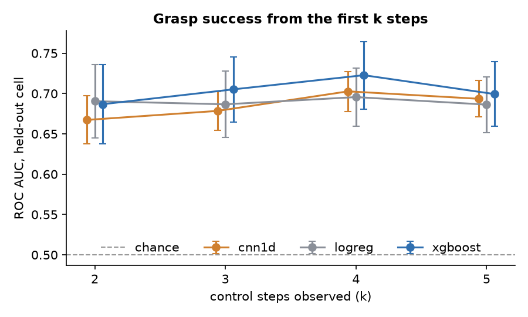
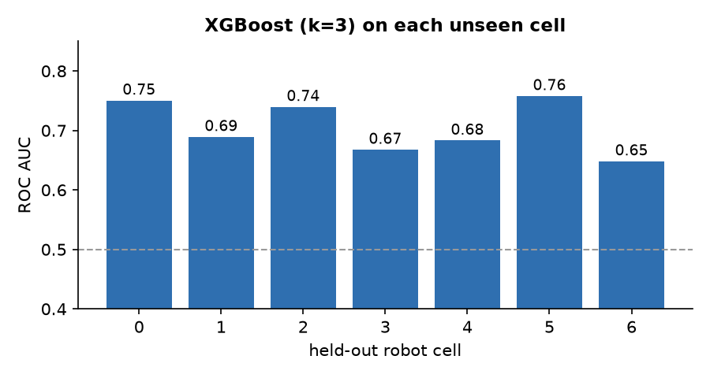
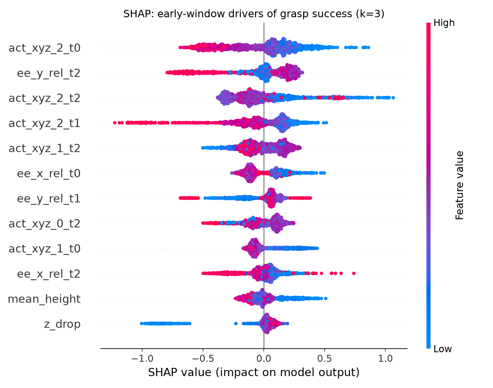
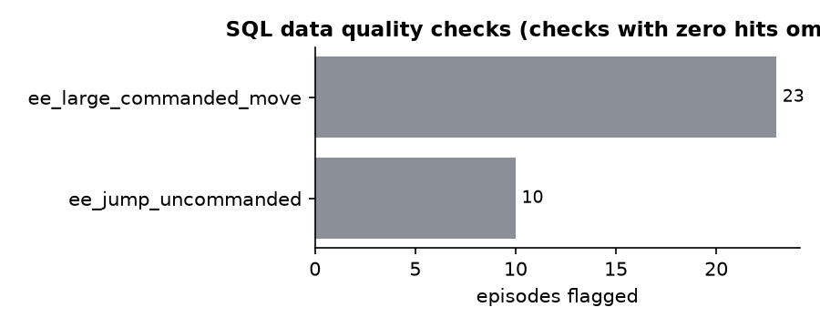
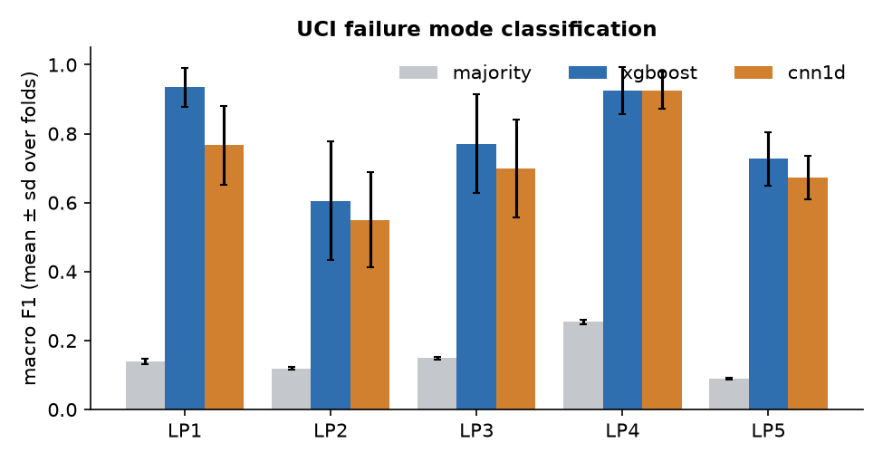

Early grasp outcome prediction
Predicting whether a robot grasp will fail from the first few control steps, early enough to abort and regrasp. Real Kuka bin-picking episodes from Open X-Embodiment, a DuckDB telemetry warehouse with SQL data quality checks, leave-one-robot-cell-out evaluation, and a second task classifying force/torque failure modes on the UCI Robot Execution Failures data.
Grasp success from the first k steps


| k | Model | Episodes | ROC AUC | PR AUC | Failures caught at 90% precision |
|---|
What drives the prediction


Failure mode classification (UCI)

How it was evaluated
- Only the first k control steps are visible to the model; episodes that already ended are not scored.
- Episode length and the terminate action are excluded because they leak the outcome.
- Each fold holds out one physical robot cell. Hyperparameters were fixed up front.
- No shared public benchmark exists for this task on this subset; compare against the baselines shown.